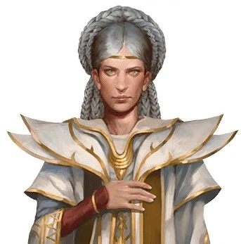

En las profundidades del bosque, bajo la tenue luz de una hoguera, se encuentran Geraldo, el valiente guerrero, y Laeral, la misteriosa maga. Sus destinos se cruzan en este lugar sagrado, donde el crepitar del fuego parece susurrar historias de antiguos tiempos y aventuras por venir.

No estoy versado en las dotes de la magia. Únicamente un par de trucos y algo de alquimia es mi único repertorio. Incluso así yo también lo noto. ¿Qué es lo que está ocurriendo?
Es algo sumamamente extraño, no creo que alguien sin formación lo pueda llegar a entender. La urdimbre, el tejido principal de la Magia, está sufriendo. ¿Comprendes?

Antes comentaste algo de Mystra. Ella es la diosa de la magia, si la urdimbre es magia. ¿Por que no hace nada? Te he visto rezarle por la noche. ¿Qué es lo que te dice?
Así es... ella es la diosa de la Magia, pero poco puede hacer, está muriendo. Cyric, el dios de la traición la ha herido de muerte. Si llegara a morir, la magia colapsaria.
Entiendo que estamos jodidos si llegara a pasar así... Debemos parar a Cyric y salvar a tu diosa, cueste lo que cueste.